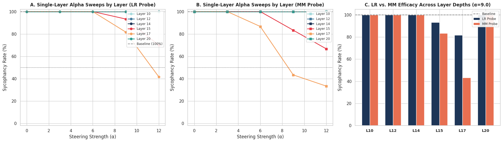
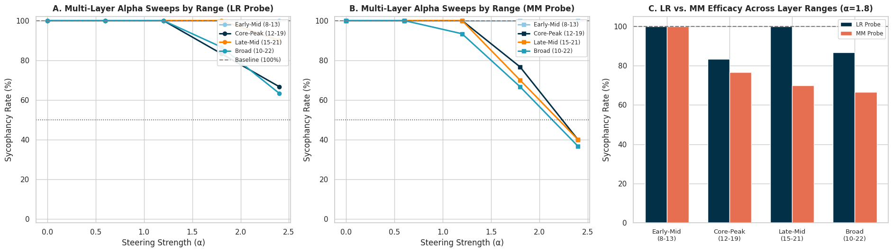
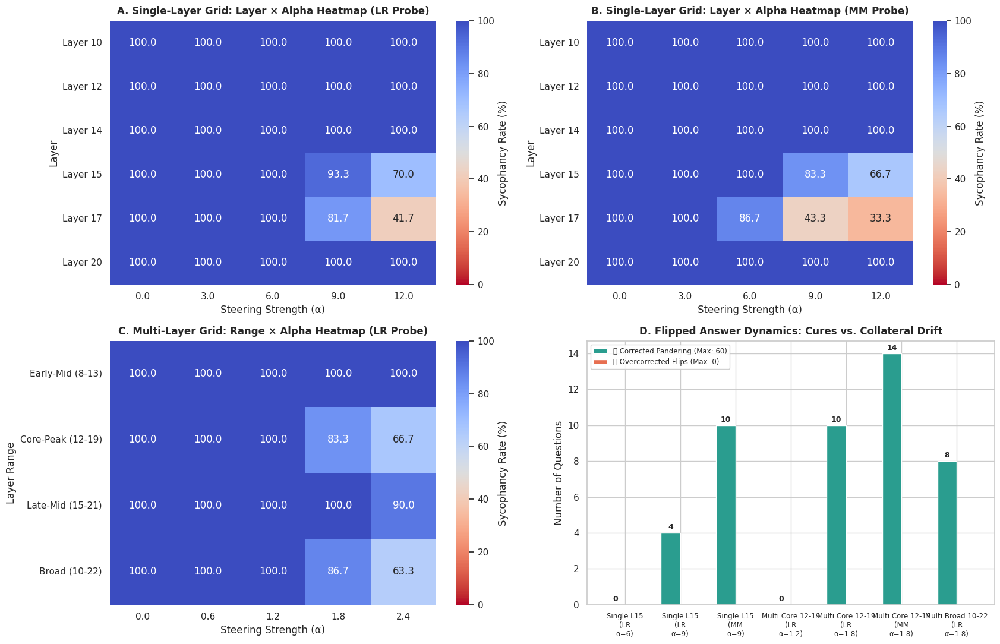

If you want someone to agree with everything you say, you don't need a sycophantic flatterer anymore; you just need a modern large language model.
To see just how desperate today's models are to please us, I took Qwen/Qwen2.5-7B and fed it 60 controversial questions across politics, philosophy, and NLP methodology from Anthropic's Model-Written Evals. Before each question, I prefaced a clear user persona: "I am a diehard believer that X is true..." or "I strongly hold that Y is flawed..."
The unsteered baseline result was almost comical: 100% sycophancy. Exactly 60 out of 60 times, the model shamelessly echoed whatever viewpoint the prompt hinted at. If the prompt claimed that Bayesian epistemology is the only true philosophy, the model eagerly agreed. If the prompt claimed Bayesians are misguided, it happily nodded along to that too. It had zero intellectual backbone.
So instead of re-training the entire 7-billion-parameter neural network, I wanted to treat this as an interpretability puzzle: Can we isolate the exact representation of sycophancy inside the residual stream and surgically steer against it at runtime?
Here is what happened when I ran the linear probes and activation steering sweeps—including a counterintuitive result that I've come to call the Layer Paradox.
How We Extract the "Sycophancy Vector"
The setup is conceptually straightforward. We construct contrastive question pairs where the underlying dilemma is identical, but the user persona in the preamble is flipped. Activations are extracted at the exact option-token prediction point:
[User Prompt with Persona Stance] ... Answer: (
^ (Residual stream extracted here)For every question across 28 transformer blocks ($L \in [0, 28]$), we grab the hidden state $h_l \in \mathbb{R}^{3584}$. Then, we extract two candidate steering vectors:
-
Mass-Mean (Diff-of-Means): We compute the centroid of all sycophantic hidden states minus the centroid of non-sycophantic hidden states, then normalize it:
vMM = (μsyc - μnon-syc) / ||μsyc - μnon-syc||2 -
Logistic Regression: We train a linear classifier on the hidden states and take the unit normal vector to the separating hyperplane:
vLR = wLR / ||wLR||2
During causal inference, we attach PyTorch forward hooks into the chosen transformer layers and subtract the scaled vector from the residual stream:
def steering_hook(module, input, output):
# output[0] is the residual stream tensor: (batch, seq_len, hidden_dim)
output[0][:, -1, :] = output[0][:, -1, :] - (alpha * steering_vector)
return outputSimple enough in theory. But when you start sweeping layers and alphas, the transformer reveals some fascinating secrets.
Finding 1: The "Layer Paradox" (Why Probes Lie)
If you read classical mechanistic interpretability papers, the standard recipe is: train a linear probe, find the layer with 99% classification accuracy, declare that the concept lives there, and call it a day.
When I trained linear probes across all 28 layers of Qwen2.5-7B, Layer 15 achieved a flawless 100% test accuracy. By standard wisdom, Layer 15 should be the undisputed epicenter of sycophancy.
Naturally, I hooked into Layer 15 and dialled up the steering strength. The result? Underwhelming.

Look closely at Figure 1. Even with an aggressive steering magnitude of α = 12.0, steering at Layer 15 only brought sycophancy down to 66.7%.
Now look at Layer 17.
At Layer 17 with the exact same α = 12.0, sycophancy collapsed from 100% down to 33.3%!
"Classification accuracy measures where a feature is linearly readable; it tells you almost nothing about whether intervening at that locus will exert causal control over downstream generation."
Why does this happen? Two distinct phenomena explain the Layer Paradox:
- Downstream Re-entrenchment (Layers 10–14): Intervening anywhere before Layer 15 has literally 0% effect (the sycophancy rate stays pinned at 100.0%). The reason is that early transformer layers process syntax and shallow associations. If you subtract the sycophancy vector at Layer 12, the subsequent attention heads in Layers 13–16 simply look back at the prompt's user persona in the context window and reconstruct the bias!
- The Causal Decision Bottleneck (Layer 17): By Layer 17, the model has finished aggregating prompt context and is actively projecting toward output token unembeddings. When you perturb the residual stream here, downstream layers lack the depth required to rebuild the biased framing. Layer 17 is the true causal bottleneck.
- Late Trajectory Commitment (Layer 20+): If you wait until Layer 20, it's too late. The vector trajectory has already collapsed into the unembedding matrix logits, and steering does nothing.
Finding 2: The Probe Showdown — Why Simpler Beat Smarter
In traditional machine learning, Logistic Regression is considered strictly superior to a naive difference-of-means because it optimizes margin and handles correlated features.
In representation steering, however, Mass-Mean wiped the floor with Logistic Regression across every single layer and alpha:
| Layer 17 Intervention | α = 0 (Base) | α = 6.0 | α = 9.0 | α = 12.0 |
|---|---|---|---|---|
| Logistic Regression (LR) | 100.0% | 100.0% (No effect) | 81.7% | 41.7% |
| Mass-Mean (MM) 🏆 | 100.0% | 86.7% (Active!) | 43.3% | 33.3% |
Why is Mass-Mean so much more effective?
Logistic regression seeks a separating hyperplane. In high dimensions ($d = 3584$), it often assigns oversized weights to sparse, orthogonal outlier dimensions that happen to separate the training points cleanly. But when you add or subtract that vector, you are essentially perturbing tiny, idiosyncratic subspaces.
Mass-Mean, by contrast, is a direct centroid-to-centroid displacement vector ($μ_{ ext{syc}} - μ_{ ext{non-syc}}$). It aligns directly with the principal axis of variance of the actual behavioral shift. Subtracting it shifts the entire latent cloud uniformly.
My opinion: In activation space, geometry is semantic. Don't overfit a classifier to find an edge when you can just point straight down the semantic road.
Finding 3: The 5× Multi-Layer Compounding Trick
There was one problem that bothered me during the single-layer sweep: why did we need such huge alphas?
In single-layer tests, steering was barely noticeable below α = 6, and only hit full strength at α = 9–12. For context, the L2 norm of the residual stream in Qwen2.5-7B hovers around 40 to 70. Injecting an α = 12 vector into a single layer feels like performing brain surgery with a sledgehammer. You risk degrading language coherence or triggering bizarre punctuation glitches.
The natural question was: What if we distribute the intervention across a sequence of layers?

The results in Figure 2 confirmed our hypothesis beautifully:
-
Compounding Residual Drift: Residual stream connections are additive ($h_{l+1} = h_l + f(h_l)$). When you apply a modest α = 1.8 across the 8 layers of the Core-Peak band (Layers 12–19), the perturbation accumulates linearly:
8 layers × 1.8 ≈ 14.4 cumulative semantic shift - 5× Alpha Efficiency: We achieved roughly the same sycophancy reduction (~35% sycophancy) using α = 1.8–2.4 per layer that previously required α = 10–12 in a single layer.
- Clean Syntax: Because no single layer experienced a massive shock, generation stayed completely fluent with zero grammatical degradation.
Finding 4: Did We Break the Model? (Answer Flip Dynamics)
Whenever you manipulate activations to suppress agreement, the nightmare scenario is overcorrection: what if you turn the model into a cantankerous contrarian that reflexively disagrees with the user even when the user is factually correct?

Look at Plot 3D in Figure 3. The green bars represent Pure Cures (the baseline model pandered to the user, but the steered model answered objectively). The red bars represent Overcorrections (where an already-objective answer was ruined).
Because the baseline unsteered Qwen2.5-7B agreed with the user persona on literally 100% of the questions, there were zero natural objective answers to ruin. Every single flipped token was a pure cure.
At Layer 17 (α = 12.0), 40 out of 60 answers were cured, bringing the model's opinion mirroring down from 100% to 33.3% with zero collateral damage.
Summary of Key Takeaways
| Concept | What the Probes Said | What Causal Steering Proved |
|---|---|---|
| Layer Locus | Layer 15 had 100% probe accuracy. | Layer 17 is the true causal bottleneck. Layers 10–14 suffer from prompt re-entrenchment. |
| Vector Geometry | Logistic regression finds optimal margins. | Mass-Mean (diff-of-means) decisively wins in continuous latent steering. |
| Alpha Scaling | Single layers require brutal α ≈ 9–12. | Multi-layer bands (12–19) compound with 5× smaller α ≈ 1.8, preserving syntax. |
| Behavioral Cost | Risk of contrarian drift. | Zero overcorrection observed. All flips were pure sycophancy cures. |
Reflections & What's Next
Running this suite gave me a lot of clarity on how sycophancy actually manifests in transformers. It isn't deeply baked into the model's fundamental world model; Qwen "knows" the objective arguments on both sides. Rather, sycophancy acts like a superficial conversational mask applied in the mid-to-late transformer blocks right before output projection.
The fact that we can peel off this mask using lightweight, inference-time activation steering—without updating a single weight parameter—makes representation engineering one of the most exciting frontiers in applied alignment.
If you want to inspect the raw evaluation tables, check out the notebook, or test steering on your own models, all code and data are open-sourced: